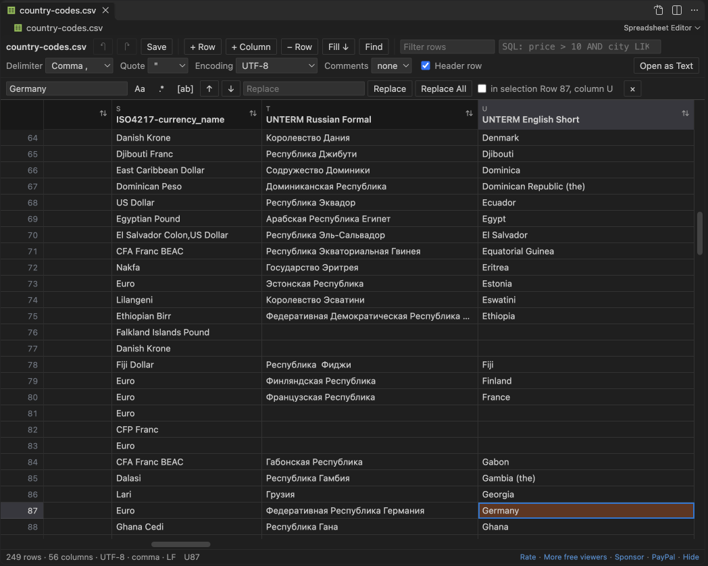

Open files in VS Code and Cursor / Tables and data
Find and replace across all CSV files in a workspace
VS Code's own Replace in Files is free but treats every CSV as plain text, so a match can hit a column name or part of a longer value. Spreadsheet Editor matches cell values instead. Its free find and replace works in one open file, with undo. Find and Replace in CSV Files, a Zovo Pro tool (USD 19 once, 3 free tries), replaces in every CSV and TSV file of the workspace at once, with regex, match case and whole cell, and lists the files and cell counts before it writes.
Free, MIT license. Extension ID zovo.zovo-spreadsheet-editor, version 0.1.1. Needs VS Code 1.90.0 or newer.
Also free from Zovo: XLSX, Excel, CSV & Parquet Viewer, VS Code Marketplace · Open VSX (Cursor, Windsurf).

Steps in VS Code
- Install Spreadsheet Editor from the Marketplace, or press Ctrl+P (Cmd+P on macOS) and run
ext install zovo.zovo-spreadsheet-editor. - Open a CSV file and click the table icon in the editor title, or right-click it in the Explorer and pick "Open in Spreadsheet Editor".
- Press Ctrl+F (Cmd+F on a Mac) and type what to find. Turn on match case, regex or whole cell. Whole cell matches only cells that hold exactly that text.
- Type the replacement and click Replace All. It works on the rows shown, or on the selected cells when you tick "in selection". With a regex,
$1puts back a group. - Press Ctrl+S to save. Replace All is one undo step, and rows you did not change are saved byte for byte.
- To do the same in every CSV and TSV file of the workspace at once, use Find and Replace in CSV Files (Zovo Pro), below.
Where Zovo Pro saves time
Find and replace in one file, with match case, regex, whole cell and undo, is free, and so are editing, filters, the SQL condition and saving. VS Code's own Replace in Files (Ctrl+Shift+H, or Cmd+Shift+H on a Mac) is free too and works on the raw text of every file.
When a value changes in a whole folder of exports, such as a renamed country, a new code or a fixed typo, opening each file costs time. Find and Replace in CSV Files reads every CSV and TSV file of the workspace, matches cell values instead of raw lines, and writes only the files you tick. The header row and comment lines are left alone, rows that do not change stay byte for byte, and each file keeps its delimiter, quotes and encoding. The other Pro tools save the filtered rows as a new CSV, TSV or XLSX file, and open files past the free size limits (CSV over 512 MB, workbooks over 40 MB).
With Find and Replace in CSV Files (Zovo Pro)
- Save the CSV files that have unsaved edits. Then run "Spreadsheet Editor: Find and Replace in CSV Files... (Pro)" from the Command Palette.
- Type the text to find, then the replacement. Then pick Regular expression, Match case or Whole cell, or none of them for plain text in any case.
- A list shows each file with matches and its number of cells. Untick a file to leave it as it is, then confirm.
- A message says how many cells changed in how many files. The files are written directly, with no undo, so commit them to Git or keep a copy first.
Find and Replace in CSV Files works 3 times on your computer before it asks for a license, and a try counts only when you get a result. Opening a file shows no popup and no countdown.
Zovo Pro costs USD 19 once. It is not a subscription, and it turns on the Pro tools in every Zovo extension, not only Spreadsheet Editor. After a card payment (Stripe) your license key shows on the next page. In VS Code, run "Zovo Pro: Enter Zovo Pro license key" from the Command Palette and paste it. The key is checked on your computer, with no network call. With GitHub Sponsors, pick the "$19 one time" tier, then run "Zovo Pro: I already paid: unlock with GitHub Sponsors" and sign in with the same GitHub account. With PayPal, send USD 19 with "Zovo Pro" in the note and the key comes by email within a day.
A team of 5: USD 59 once, by card or by PayPal. Every rule and every Pro tool is on the Zovo Pro page.
Steps in Cursor, Windsurf or VSCodium
- Open the Extensions view with Ctrl+Shift+X (Cmd+Shift+X on macOS).
- Search for
zovo.zovo-spreadsheet-editorand click Install. Cursor, Windsurf and VSCodium install from Open VSX, where it is published aszovo/zovo-spreadsheet-editor. - If your editor has no gallery, download the .vsix from the Open VSX page and run "Extensions: Install from VSIX...".
- Then use it the same way as in VS Code.
What Spreadsheet Editor handles
- Every
.csvand.tsvfile in the workspace, up to 5,000 files, skippingnode_modules. - Quoted values with commas or line breaks inside, since it matches one cell at a time.
- Plain text, regular expressions with
$1groups, match case and whole cell. - The 13 encodings the editor reads, kept as they were, such as UTF-16, Windows-1252 and Shift_JIS.
What it does not do
- The workspace replace writes the files directly. It has no undo, so use Git or a copy.
- Files with unsaved edits in VS Code are skipped.
- Files over the editing size limit (512 MB by default) are skipped.
- Only
.csvand.tsvfiles on the local disk are searched..tab,.psvand Excel files are not.
Other options
- Replace in Files in VS Code. Free and built in. It works on raw text, so check that a match cannot hit a column name or part of a longer value.
- qsv. A free command-line CSV toolkit. Its replace command changes values by regex in the columns you select, one file at a time.
Install counts and Open VSX status were checked on 12 November 2026. Descriptions in quotes are the extensions' own.
Questions
Can I undo a replace across all files?
Not inside VS Code. The Pro tool writes the files directly, so use Git or keep a copy. Replace All inside one open file can be undone with Ctrl+Z.
Will it change the header row?
No. The header row and comment lines are skipped. Only data cells change.
Is it free?
Find and replace in one file is free. The tool for all files is Zovo Pro, with 3 free tries, and a try is used only when a replacement is written.
Does it work in Cursor or Windsurf?
Yes. Cursor, Windsurf and VSCodium install extensions from Open VSX. Search for the extension in their Extensions view and install it there.
More about Spreadsheet Editor
Read the Spreadsheet Editor page for every feature and setting, or the source code on GitHub.
Related guides
- XLSX, Excel, CSV & Parquet Viewer on the VS Code Marketplace (also on Open VSX). Opens xlsx, xls, csv and parquet files as a sortable table with SQL filters.
- Edit CSV files in VS Code as a spreadsheet
- Edit an .xlsx file without Excel
- Edit a CSV file that is too big for Excel
- Fix a CSV that opens in one column or with broken characters
Zovo Pro and support
Zovo Pro: USD 19 once, every Zovo viewer. It turns on the Pro tools in this extension and in the other Zovo extensions you use. The free features stay free.
After a card payment your license key shows on the next page. Paste it with the command "Zovo Pro: Enter a key".
You can also support the work with no Pro:
Need your format supported?
Open a format request with a sample file, and I reply there whether it can be done. For USD 299 once, through this GitHub Sponsors tier, I add your file format or a missing feature to this extension, with tests, within 7 days.